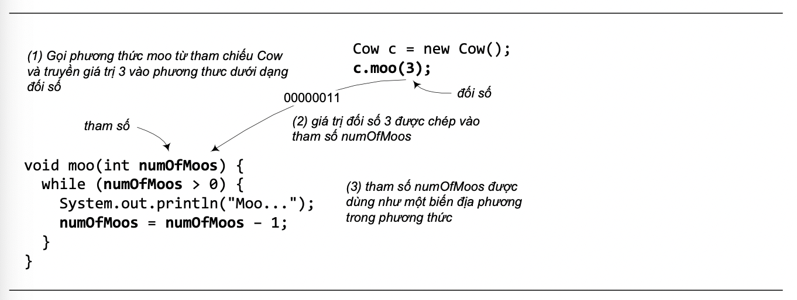
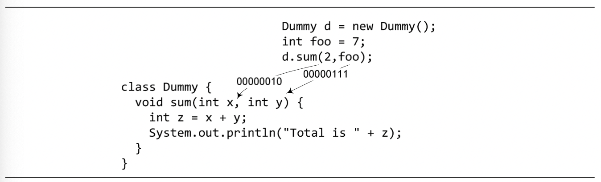
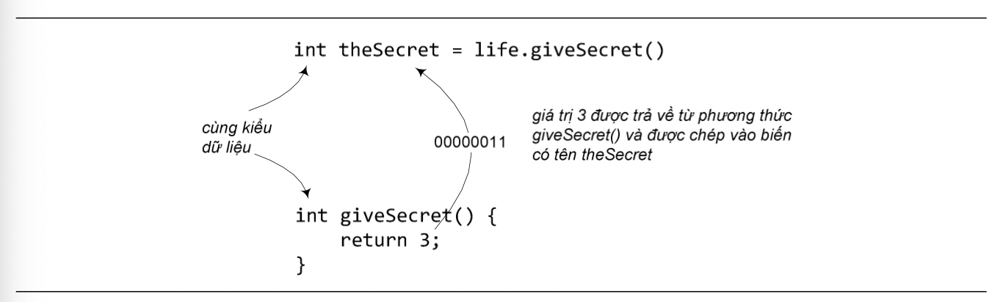
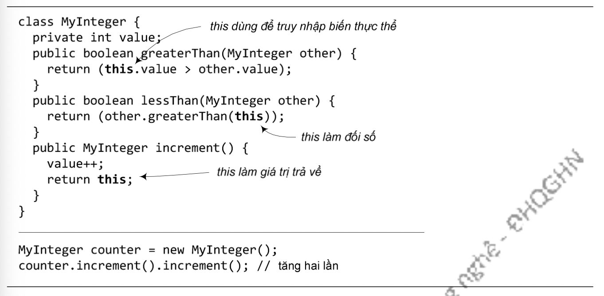

Cũng như trong các ngôn ngữ lập trình khác, ta có thể truyền các giá trị vào trong phương thức. Ví dụ, ta muốn chỉ thị cho một đối tượng Cow về số lần rống cần thực hiện bằng cách gọi phương thức như sau:
c.moo(3);
Ta gọi đối số (argument) là những gì ta truyền vào trong phương thức. Đối với Java, đối số là một giá trị, chẳng hạn 3 như trong lời gọi ở trên, hoặc "Hello" như trong System.out.println("Hello"), hoặc giá trị của một tham chiếu tới một đối tượng Cow. Khi lời gọi phương thức được thực thi, giá trị đối số đó được chép vào một tham số. Tham số (parameter) thực chất chỉ là một biến địa phương của phương thức – một biến có một cái tên và một kiểu dữ liệu, nó có thể được sử dụng bên trong thân của phương thức.
Hình 5.1: Đối số và tham số.
Điều quan trọng cần nhớ: Nếu một phương thức yêu cầu một tham số, ta phải truyền cho nó một giá trị nào đó, và giá trị đó phải thuộc đúng kiểu được khai báo của tham số.
Phương thức có thể có nhiều tham số. Khi khai báo, ta dùng dấu phảy để tách giữa chúng. Và khi gọi hàm, ta phải truyền các đối số thuộc đúng kiểu dữ liệu và theo đúng thứ tự đã khai báo.
Hình 5.2: Phương thức có thể có nhiều tham số.
Phương thức có thể trả về giá trị. Mỗi phương thức được khai báo với một kiểu trả về, nhưng cho đến nay, các phương thức ví dụ của ta vẫn dùng kiểu trả về là void, nghĩa là chúng không trả về cái gì.
void doSomething() {
}
Ta có thể khai báo để phương thức trả về cho nơi gọi nó một loại giá trị cụ thể, chẳng hạn:
int giveSecret() {
return 3;
}
Phương thức đã khai báo sẽ trả về giá trị thuộc kiểu dữ liệu gì thì phải trả về giá trị thuộc kiểu đó. (Hoặc một giá trị thuộc một kiểu tương thích với kiểu đã khai báo. Ta sẽ bàn chi tiết về điểm này khi nói về đa hình ở Chương 5.)
Hình 5.3: Ví dụ về giá trị trả về từ phương thức
Như đã nói đến ở mục trước, this là tham chiếu tới đối tượng hiện hành. Do đó, nếu một phương thức cần trả về tham chiếu tới đối tượng hiện hành, nó dùng lệnh return this;. Tham chiếu this cũng có thể được dùng làm đối số nếu ta cần truyền cho một phương thức một tham chiếu tới đối tượng hiện hành. Chẳng hạn, từ bên trong một phương thức của lớp Square, đối tượng hình vuông hiện hành yêu cầu một đối tượng đồ họa myGraphics dùng lời gọi myGraphics.draw(this); để vẽ chính hình vuông đó, trong đó, this là phương tiện để đối tượng lớp Square truyền tham chiếu tới chính mình vào cho phương thức draw().
Hay một ví dụ khác là lớp MyInteger trong Hình 5.4. Ví dụ này minh họa các công dụng của tham chiếu this. Một điểm đáng chú ý trong ví dụ này là phương thức increment() trả về tham chiếu tới chính đối tượng chủ, điều này cho phép gọi phương thức này thành chuỗi như trong phần mã ví dụ sử dụng lớp MyInteger.
Hình 5.4: Các công dụng của tham chiếu this trong phương thức.